Le Cadre se construit sur la stack A. Mistral écrit les textes, et une personne les relit avant chaque envoi.
Le rendu, page par page
- 02StackA est gardée, G est la meilleure no-code, D ou E en plan B.fait
- 03IAMistral dans le produit, Claude pour l’équipe, un clic humain avant tout envoi.relecture à valider
- 04BlueprintCe que vit la famille, ce que fait l’équipe en coulisse.fait
- 05Direction artistique et maquettageLa marque Soly, la maquette v4 et l’audit de la DA en 9 axes.fait
- 06Qui a fait quoiLa contribution de chacun.à compléter
- 07Usage de l’IAChaque outil, pour quoi, ce qui a été vérifié.fait
Limites et suite
Ce qui n’est pas encore fait, dit sans détour.
- 1Relecture humaineL’équipe valide les petits mots et les résumés écrits par l’IA.
- 2Le ChatTâches F à K à jouer par l’API Mistral, puis brancher le circuit de validation.
- 3WeWeb et MakeÀ essayer : s’ils passent, G reste la piste tout no-code.
- 4Écran du cadre sur la tabletteÀ tester sous Ubuntu Touch ; plus de deux jours de code, et on bascule vers D.
- 5Hébergement en EuropeÀ vérifier : le site de la stack A, et le pays où chaque IA traite les données.
Rendu en HTML, à la place du PDF de 6 à 8 pages : à confirmer avec le formateur.
La stack A passe devant, et deux plans B sont prêts.
Classement
Huit stacks notées sur 100. Les hachurées sont hors classement : leurs données quittent l’Europe.
- 75A · React
- 70G · WeWeb + Baserow
- 68E · WeWeb
- 64D · FlutterFlow
- 60F · Baserow
- 54H · Bubble
- 50B · Glide
- 48C · Softr
- 01A · React + Next.js + Supabase75/100. La seule base testée en local de bout en bout.gardée
- 02G · WeWeb + Baserow + Make70/100. Meilleure piste tout no-code. WeWeb et Make encore à essayer.à tester
- 03E ou D · Supabase + n8n68 et 64/100. Même base que A : seuls les écrans changent (WeWeb ou FlutterFlow).plan B
- 04F, H, B, CBaserow seul ne tient pas les règles (60). Bubble : Europe seulement sur Enterprise (54). Glide et Softr : données hors Europe (50, 48).écartées
Pourquoi A
L’équipe décrit en français, Claude Code écrit, l’équipe vérifie : le travail du no-code.
Testé en local : Supabase rejette le doublon et le fichier vide. Baserow accepte tout et publie les photos.
Même Supabase, mêmes tests : on change seulement les écrans. Deux jours de retard, et on bascule.
Comment on a noté
Sept critères notés de 1 à 5, pondérés. Chaque note vient de la doc officielle ou d’un test en local, et le dit. Les données hors Europe éliminent, quel que soit le score.
| Critère | Un 5 vaut | Poids |
|---|---|---|
| Capacités | Les quatre usages tiennent sans contournement. | 20 % |
| Interopérabilité | Webhooks entrants et sortants gratuits. | 20 % |
| Affichage adapté au cadre | Plein écran, lisible à 3 mètres. | 15 % |
| Simplicité | Une demi-journée pour construire l’essai. | 15 % |
| Coûts | Gratuit pour la démo et le prototype. | 10 % |
| Limites | Aucune limite gênante pour 2 familles. | 10 % |
| Stockage des vidéos | Plus de 5 Go. | 10 % |
| Données en Europe | Un « non » élimine la stack. | éliminatoire |
Les IA se valent aux tests ; le pays des données décide.
Classement public
Vals Index, en %. Il ne mesure ni le refus d’inventer ni le ton pour une personne âgée : il ne départage pas nos IA.
- Claude Sonnet70,85
- Claude Opus70,18
- Gemini 4 Argon69,24
- DeepSeek61,26
- Claude Haiku58,73
- Grok58,56
- Le Chat (Mistral)56,42
- Kimi52,95
- ChatGPT52,32
- Gemini 3.5 Flash-Liteabsent
Nos 11 tâches
Mêmes consignes pour toutes, données fictives, points du contrôle automatique sur 51. Le Chat n’est pas joué : en cours par l’API.
- 50,3Grok
- 50Sonnet
- 50Haiku
- 50Opus
- 50ChatGPT
- 48,4Kimi
- 47DeepSeek
- 43,4Gemini
Les trois tâches qui séparent
| Tâche | Sonnet | Opus | Haiku | ChatGPT | Grok | DeepSeek | Kimi | Gemini |
|---|---|---|---|---|---|---|---|---|
| Refuser d’inventer / 5 | 5 | 4 | 4 | 4 | 5 | 3 | 3 | 4 |
| Anomalie de routine / 5 | 5 | 5 | 5 | 5 | 5 | 3 | 5 | 0 |
| Petit mot chaleureux / 4 | 4 | 4 | 4 | 4 | 3,33 | 4 | 3,67 | 2,67 |
En orange : sous le maximum. Sur les huit autres tâches, presque toutes les IA font le maximum.
Verdict par IA
Dix IA, un verdict chacune. Cliquez une ligne pour le résumé.
| IA | Vals Index | 11 tâches | Verdict |
|---|---|---|---|
| Claude Sonnet 5.5 | 70,85 | 50 / 51 | Outil de l’équipe. Outil interne (entretiens, code) ; 8/8 aux pièges, mais hors produit. |
| Claude Opus 5.5 | 70,18 | 50 / 51 | Outil de l’équipe. Testé : 50/51, une erreur (F). Outil interne seulement, comme les autres Claude. |
| Claude Haiku 5.5 | 58,73 | 50 / 51 | Outil de l’équipe. Outil interne de l’équipe (entretiens anonymisés) ; hors produit, règle Europe. |
| Le Chat (Mistral) | 56,42 | en cours | Gardée. Obligatoire dans le produit (règle Europe) ; tâches F à K en cours par l’API. |
| ChatGPT (gpt-6-luna) | 52,32 | 50 / 51 | Pour comparer. 40/41 sur compte gratuit ; invente un anniversaire ; hors règle Europe. |
| Grok (mode Rapide) | 58,56 | 50,3 / 51 | Pour comparer. 8/8 aux pièges, deux fois ; lieu des données non garanti par xAI. |
| Gemini 3.5 Flash-Lite | — | 43,4 / 51 | Pour comparer. Correct sur le fond, mais instable et format peu fiable ; hors règle Europe. |
| Gemini 4 Argon | 69,24 | — | Pour comparer. Classement public seulement ; jamais testé sur nos tâches. |
| DeepSeek | 61,26 | 47 / 51 | À écarter. Données en Chine ; souvenirs inventés et mauvais refus, deux fois. |
| Kimi K3 | 52,95 | 48,4 / 51 | À écarter. Résumé chaleureux, mais mauvais refus et données hors Europe. |
Quelle IA pour quoi
Tout ce qui touche aux données des familles. Seul européen testé ; tâches F à K en cours par l’API.
Entretiens anonymisés et code, jamais les familles. Haiku : 50 sur 51 ; 4 citations exactes sur 4 ; aucun nom ni lieu envoyé.
ChatGPT, Gemini, Grok, DeepSeek et Kimi. DeepSeek et Kimi traitent les données en Chine : à écarter.
Garde-fous
Rien n’arrive au cadre sans un clic humain.
- Faitsles données de la famille
- Modèleappel de l’IA
- Contrôlesrègles automatiques
- Brouillonle petit mot
- Une personnedécide
- Envoifile d’envoi
Limite : les règles ont été écrites puis ajustées après lecture de ces 88 sorties. Le taux de blocage sur d’autres textes est inconnu.
Coûts et données
Le coût ne départage pas, le pays oui.
0,9 à 18 USD par mois pour 100 familles, 55 au plus avec marge. 65 % des jetons vont au compagnon.
Mistral héberge dans l’UE ; rien trouvé pour Claude et OpenAI. DeepSeek et Kimi : Chine. Grok : non garanti.
Mistral Free et Gemini gratuit entraînent sur les données : tests fictifs seulement.
Méthode
Quatre étapes, les mêmes consignes pour toutes les IA.
- 1Partir de nos usages
11 tâches tirées du Cadre, de la rédaction du petit mot au compagnon du parent.
- 2Même consigne pour tous
claude -p --model sonnet, prompt système « Tu es un assistant. Réponds uniquement à la consigne, sans rien ajouter. »
- 3Un script qui note
run.py note ce qui se vérifie et recalcule sans rappeler l’IA (barème corrigé pour accepter « 82 ans »).
- 4Garde-fous et règle Europe
Mots interdits bloqués ; lieu de traitement hors UE, donc outil interne seulement.
Ce que vit la famille, et ce que fait l’équipe derrière.
Le service en un tableau
De la pub au premier mois : 14 étapes, de la famille à l’équipe en coulisse. Version 4 de Clément. Cliquez l’image pour l’ouvrir en grand.
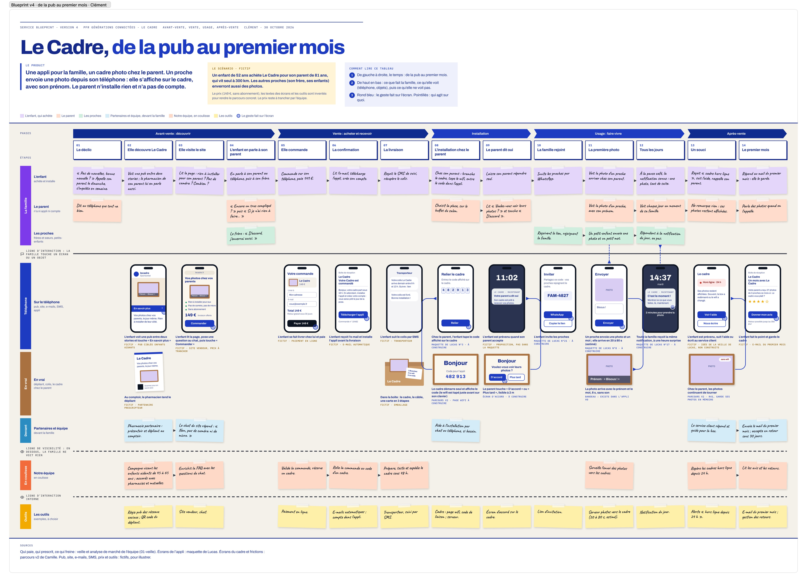
Le service pas à pas
La même histoire, animée, dans la charte Soly.
Soly : une marque chaude et lisible, mise à l’épreuve écran par écran.
Principes et logo
« Le cadre qui ensoleille la journée. » Trois règles, puis un logo : un cadre, un nom, un point.
Le jaune éclaire : en point, en reflet, en halo. Il ne remplit jamais un fond.
Zones tactiles larges, coins arrondis, un seul geste par écran.
Des mots de famille. Pas de surveillance, pas de vocabulaire de santé.
- Le symboleUn cadre coupé en quatre quarts : trois en encre, le dernier en soleil, comme une fenêtre allumée.
- Le nom« Soly » en Lexend SemiBold, toujours en minuscules sauf l’initiale.
- Le pointRond, couleur soleil : il ferme la phrase comme un bonjour. Pas d’effet, pas de lueur.
Déclinaisons
Le logo garde la même forme sur six fonds. Sur un fond déjà lumineux, le point passe en aube.
Construction
56 px sur écran, 36 px sur petit écran, 22 px pour le symbole seul.
La hauteur du « S » de chaque côté. Rien ne rentre dans cette zone.
- pas de majuscules (SOLY)
- pas de point oublié
- pas de texte jaune
- pas de rotation
Couleurs et lumière
Huit tons chauds. Le texte en encre sur aube atteint 16,6 : 1. Le soleil éclaire, il ne s’écrit pas.
#FFFAF0Fond principalEncre 16,6 : 1#FFF3D9Fond des cartesEncre 15,7 : 1#1F1A17Texte et boutonsSur aube 16,6 : 1#6A5F55Texte secondaireSur aube 6,0 : 1#FFD36ELumière, le point du logoJamais en texte#FFC9A3Accent chaudEncre 11,6 : 1#C9B8F0Accent douxEncre 10,2 : 1#F0E3C8Filets et borduresDécoratifLa lumière se pose, elle ne brille pas
Un dégradé pour les photos, un halo d’ambiance, deux dégradés d’accent. Le halo va derrière un écran ou un titre, jamais sous un bouton ou une carte.
Typographie
Deux polices : Lexend pour parler, Atkinson Hyperlegible pour expliquer.
Titres, boutons, libellés. Formes rondes et ouvertes, chiffres nets.
Le texte courant. Dessinée pour les basses visions : chaque lettre se distingue (I, l, 1).
Échelle
| Display Lexend Medium | 76 px | −4 % | Un rayon de famille. |
| Titre 1 Lexend Medium | 48 px | −3 % | Un signe pour aujourd’hui |
| Titre 2 Lexend Medium | 32 px | −2 % | Vous gardez la main |
| Bouton Lexend Medium | 17 px | 0 | Envoyer un signe |
| Corps L Atkinson | 21 px | interligne 145 % | Une photo de la famille apparaît sur le cadre. |
| Corps Atkinson | 17 px | interligne 145 % | Le cadre s’allume à 8 h, sans réglage. |
| Libellé Lexend Medium | 13 px | +6 % | Aujourd’hui |
Règles : corps de texte à 17 px sur écran, contraste minimum 4,5 : 1, jamais de texte soleil sur fond clair. Dans la maquette v4, rien ne descend sous 14 px (audit, axe 1).
Interface
Sobre, net, sans ombre. Des composants larges, pensés pour un doigt qui tremble un peu.
Pilule de 56 px minimum. Un seul bouton principal par écran. Aucun halo au survol.
56 px de haut, bordure ligne qui passe en encre au focus.
Trois moments de la journée
- le jaune en lumière : point, reflet, halo
- texte encre sur fond clair
- zones tactiles de 56 px minimum
- des mots de famille, jamais de jargon médical
- coins arrondis, marges larges
- le jaune en aplat
- texte jaune ou lilas
- lueurs et ombres colorées
- un autre symbole ou un cadre autour du logo
- les capitales
Applications
La marque sort de l’écran : le cadre au mur, l’appli de la famille, les réseaux, le coffret.
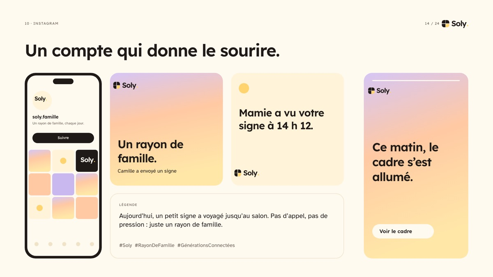
14Instagram, un compte qui donne le sourire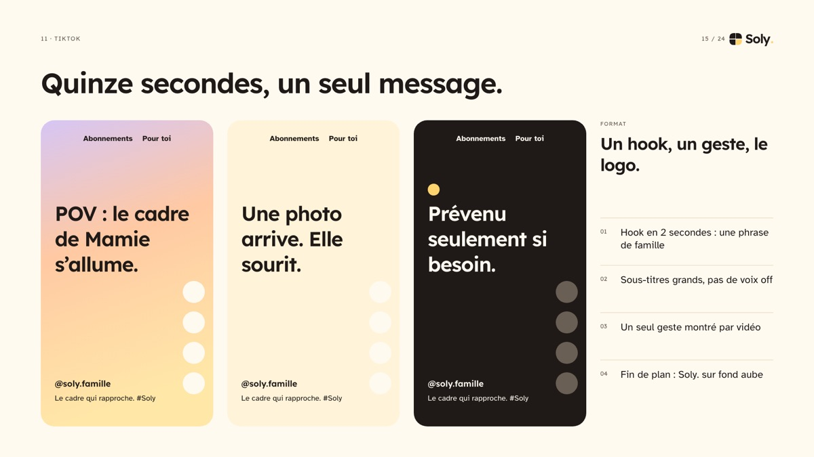
15TikTok, quinze secondes, un seul message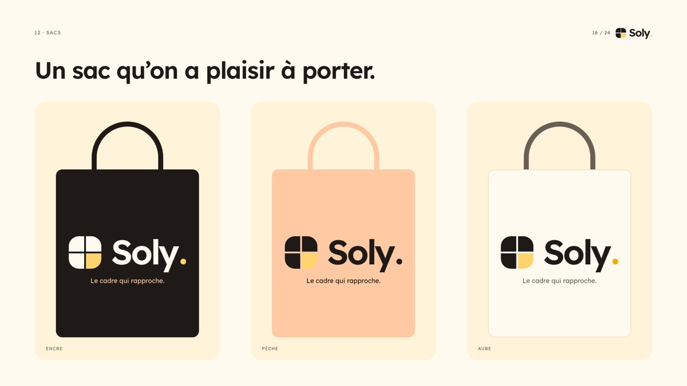
16Sacs, un objet qu’on a plaisir à porter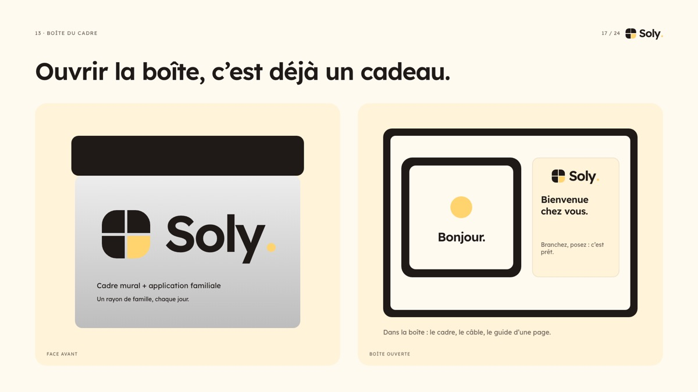
17Coffret, ouvrir la boîte est déjà un cadeau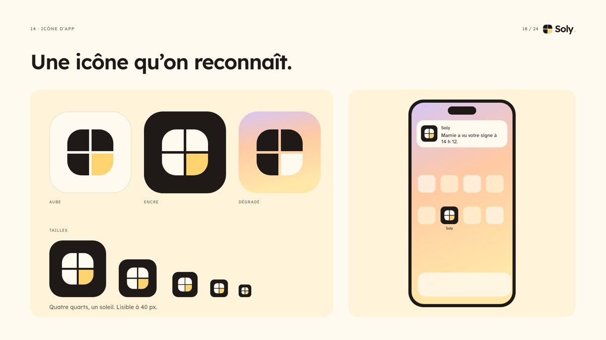
18Icône, reconnaissable à toutes les tailles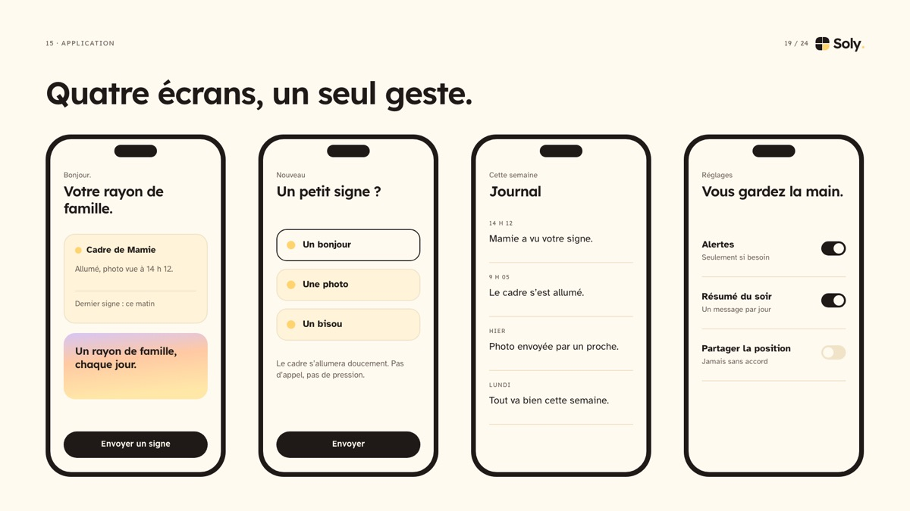
19Application, quatre écrans, un seul geste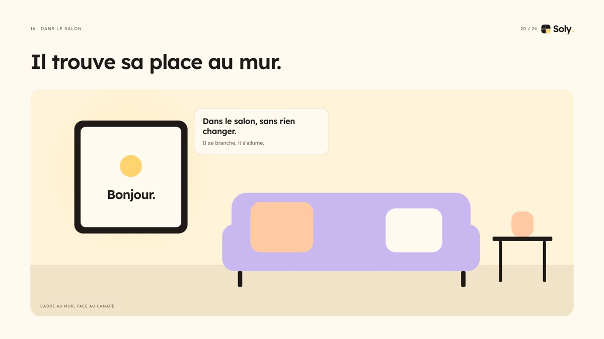
20Le cadre trouve sa place au mur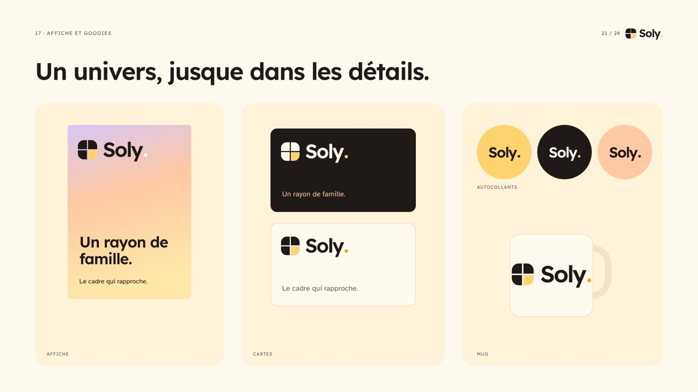
21Affiche et goodies, un univers jusque dans les détails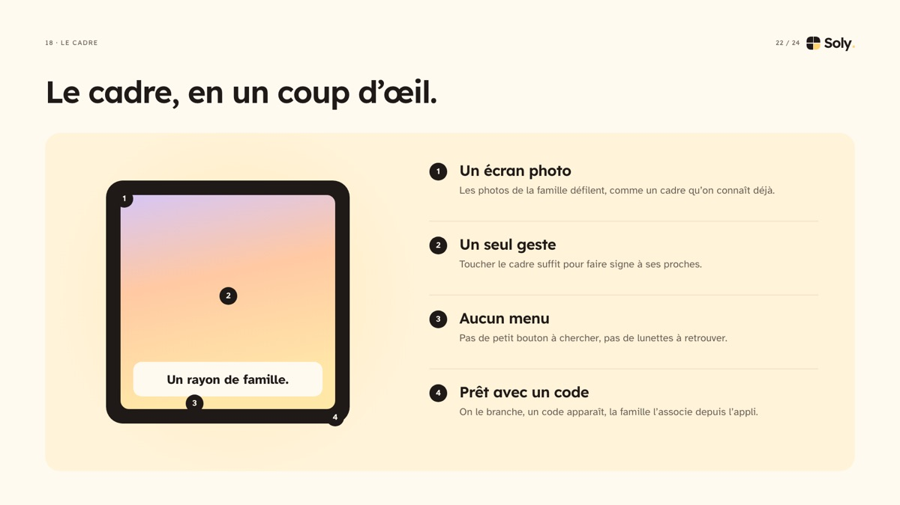
22Le cadre, en un coup d’œil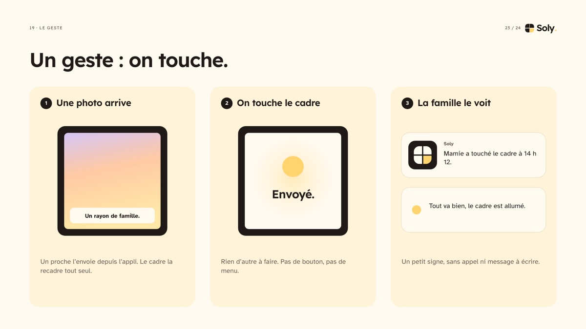
23Un geste : on touche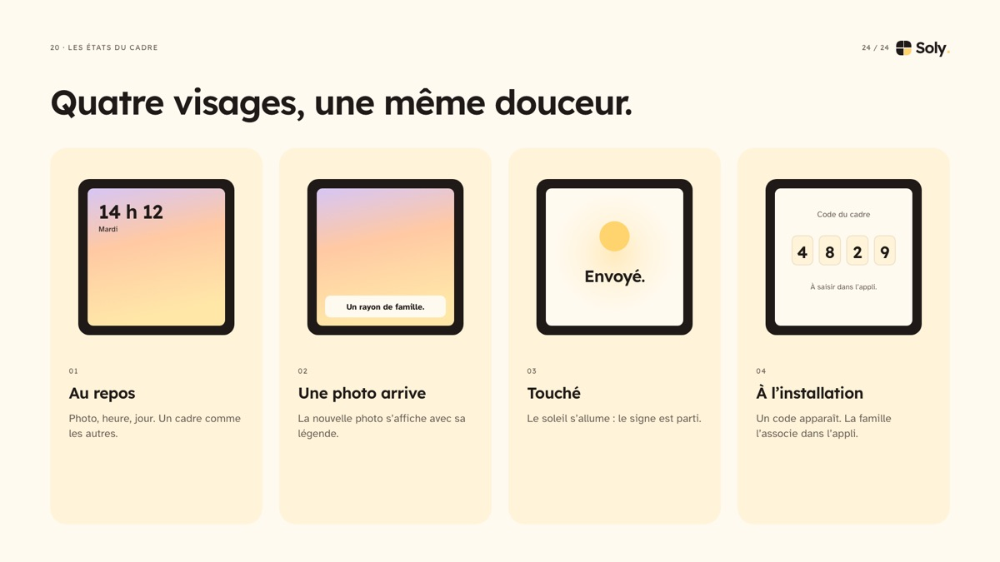
24Les quatre états du cadreLa maquette interactive v4
Le cadre au mur et l’application de la famille, reliés. Lancez un scénario, ou touchez directement le téléphone et le cadre. La liste des 28 écrans est plus bas dans le module.
L’audit de la DA, en 9 axes
Chaque écran relu avec une question : un parent âgé et sa famille s’y retrouvent-ils ? Ce qui est réglé passe dans la maquette, ce qui demande un choix reste ouvert dans Figma.
- 01Taille du texte14 px minimum sur l’appli, 44 px pour toucher, 20 px et plus sur le cadre.appliqué v4
- 02Statut de livraisonChaque envoi affiche « Au mur de Jeanne » : la famille sait que la photo est arrivée.appliqué v4
- 03Cadre hors ligneAucun écran ne disait que le cadre était hors ligne. L’état est simulé dans le prototype.dans le prototype
- 04Qui appelle les secours, et quand ?Jamais seul : un rappel après 24 h, la décision reste humaine.ouvert dans Figma
- 05Photo envoyée en retard (écran 19)Dire clairement quand elle s’affichera, sans culpabiliser.ouvert dans Figma
- 06Qui voit « Maman t’a envoyé un Soly » (écran 25)Préciser qui reçoit la notification dans la famille.ouvert dans Figma
- 07Mosaïque ou une photo à la fois (écran 20)Choisir l’affichage le plus lisible pour le parent.ouvert dans Figma
- 08L’alerte depuis les réglages (écran 16)L’alerte ne s’ouvre pas depuis les réglages : ajouter l’accès.observation
- 09Petit-enfant de moins de 15 ans (écran 23)Il manque l’écran d’attente de validation par un parent.observation
Chacun a porté un bloc, avec l’équipe d’agents.
Clément
- Classement des stacksGrille, critères, notes sourcées, brique par brique.
- Compte rendu et prompts de la boîte à outils IAUn prompt par thème.
- Blueprint animéCinq versions, dont celle en charte Soly.
Lucas
- VeilleApple Watch contre Famileo, fiches de marché, questions techniques.
- Direction artistique SolyNoms, logo, trois univers.
- Maquettes et prototypeAppli sur 28 écrans, cadre au mur cliquable.
Camille
- Atelier besoinsHypothèses, kit d’entretiens, entretiens du 28 octobre.
- Parcours des familles test et contenu du blueprintDe la première rencontre à la première photo.
- Tests et benchmarksBancs Supabase, Firebase, n8n, Baserow, banc IA, page du benchmark.
Établi d’après les commits du dépôt et le suivi du projet. Chacun complète et valide sa colonne, et peut ajouter une page « ce que j’ai fait, appris, ferais autrement ».
L’IA est un outil de travail, déclaré et vérifié.
| Outil | Pour quoi | Ce qui a été vérifié |
|---|---|---|
| Claude Code | Code des bancs de test, pages du rendu, pilotage d’une équipe d’agents. La stack A est elle-même écrite avec Claude Code. | Tests exécutés, journaux gardés, textes relus. |
| Neuf IA essayées | Claude (Sonnet, Opus, Haiku), ChatGPT, Gemini, Grok, DeepSeek, Kimi, Le Chat : onze tâches courtes, mêmes consignes, données fictives. | Contrôle par script, puis relecture à la main (à valider). |
| Mistral, prévu dans le produit | Écrire le petit mot et le résumé de la semaine. | Un humain valide avant l’envoi, jamais de conseil médical. |
Aucune donnée réelle de famille dans les essais, aucune clé dans les pages, les décisions restent humaines. Usage dans le respect de la charte IA de Ynov. Chacun complète ses propres usages.